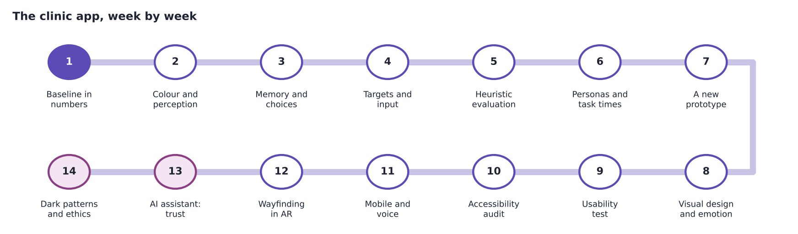
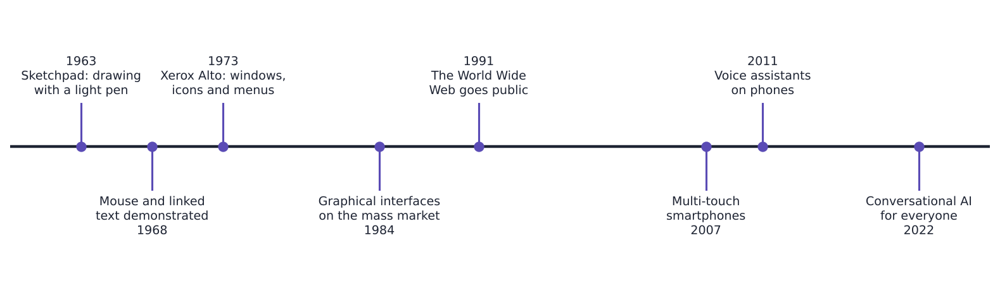
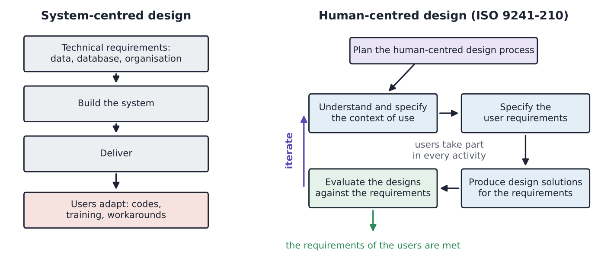
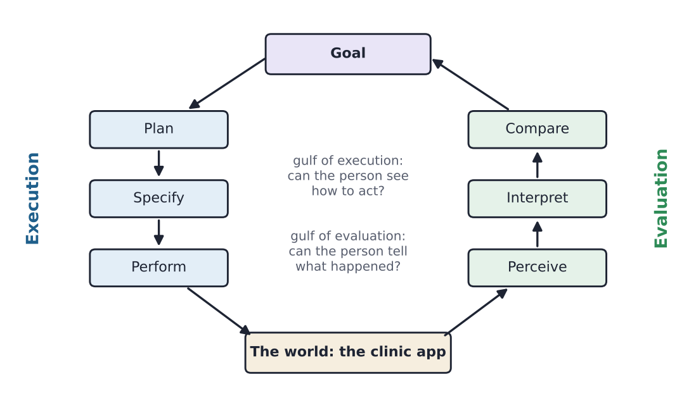
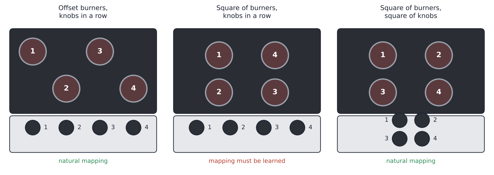
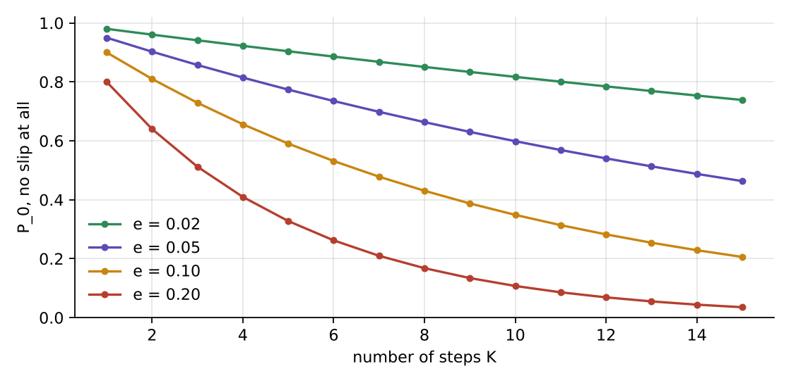
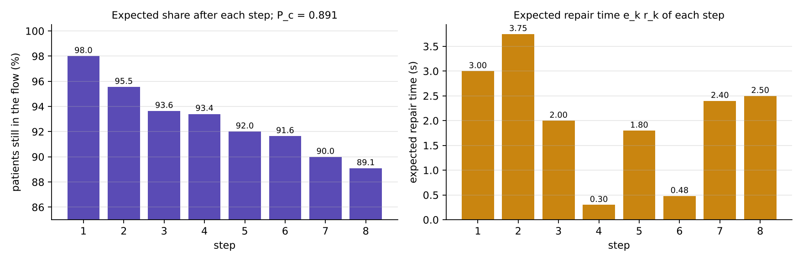

Overview
Human-computer interaction (HCI) studies how people use interactive computing systems and how such systems should be designed, evaluated and built for human use [1]. The field joins computer science with psychology, design and ergonomics. This week starts with the central choice of the field: Should people adapt to the system, or should the system be designed around people? It contrasts system-centred with user-centred design and introduces the loop of action described by Norman, with its two gulfs [2]. It defines usability as the International Organization for Standardization (ISO) does in its standard ISO 9241-11 [3]. Four numbers measure it, from the completion rate to a questionnaire score. Signifiers and mappings follow, with experiments to play in three dimensions (3D), and then a probability model of a task with several steps. The project of the course, a clinic appointment app, starts with a baseline in numbers. The week closes with what changes when the system on the other side of the loop is an artificial intelligence (AI).
Week at a glance
flowchart LR A["What is HCI?"] --> U["System-centred or user-centred?"] U --> B["The interaction loop"] B --> C["Usability in numbers"] C --> D["Signifiers and mapping"] D --> E["A task as a chain of steps"] E --> F["Interface clinic"] F --> G["The human side"] G --> S["The clinic app, stage 1"] S --> H["Toward human-AI interaction"]
Every method on this page is also written as Python code in the Colab notebook of the week. A Colab notebook is a document of text and Python code that runs in the web browser, with nothing to install [4]. Its code is divided into numbered sections. Each orange box on this page names the section whose code carries out what the text above the box explains. The box says what to run and what to look at in that section, and its button opens the Colab notebook at that place. The games, the practice parts and the self-assessment of the week are in the interactive lab. Each violet box opens one part of the interactive lab. The part ends with a link back to its box on this page, and the Colab notebook is always opened from the orange boxes here.
Python step 1: Values, variables, lists and decisions
Python code in the Colab notebook, right after Section 0 (setup). Open the Colab notebook and run this step cell by cell: It consists of short pieces of Python code with their explanations, a quick check and three exercises. Topics: Values and variables · A decision is an if statement · Lists and loops · Functions · Dictionaries · A list of dictionaries.
Python [5] is the language of the course. The step works with data from the kiosk of the clinic app. It stores one booking session as values and checks it against a target time. It then computes means and shares of many sessions with loops and functions, and it compares two groups of patients with dictionaries. The hands-on sections then use the libraries NumPy [6], pandas [7] and Matplotlib [8]. Students who have never programmed start with the start-here notebook of the course.
One project runs through all fourteen weeks: The appointment app of a city hospital, called the clinic app in this course. Patients use it to book, change and cancel appointments, and a kiosk in the hospital lobby runs the same service for check-in and booking. The app, the hospital and the patients are invented, so that every number can be computed and checked, and the limits of this choice are part of the discussion.
Week 1 races two versions of the kiosk against each other and measures the booking flow of the app as it is. Weeks 2 to 4 audit the app against human perception, memory and movement. Week 5 runs a heuristic evaluation, Week 6 builds personas and predicts task times, and Week 7 prototypes a new flow. Week 8 redesigns the screens, Week 9 tests old and new designs with simulated patients, and Week 10 audits accessibility. Week 11 moves the app to the phone and adds voice, and Week 12 guides patients through the hospital in augmented reality. Weeks 13 and 14 add an AI assistant and measure trust, reliance and the ethics of its design.

What is human-computer interaction?
The curriculum of the Association for Computing Machinery (ACM) describes HCI as a discipline concerned with the design, evaluation and implementation of interactive computing systems for human use [1]. It also covers the study of the major phenomena that surround such systems. The interface is the part of a system that a person sees, hears and touches: Screens, buttons, menus, sounds and voices. The interaction is what happens over time between the person and the system, as a sequence of actions and responses. HCI designs both, and it measures them through studies with people.
Interactive computing is younger than most of its users. Sutherland's Sketchpad let a designer draw on a screen with a light pen in 1963 [9]. In 1968 Engelbart and English demonstrated the mouse, linked text and shared screens to a live audience [10]. Windows, icons and menus were developed at the Xerox Palo Alto Research Center (PARC) in the 1970s and reached the mass market in the 1980s [11]. The World Wide Web, touch screens, voice assistants and conversational AI each changed again how people reach computers.

Every new style of interaction raised the same questions. Can people find what the system offers? Do they understand what it tells them? Can they reach their goals quickly and without errors? This course answers these questions with models of the human, design principles and measurements, and it applies them to one app from week to week.
- Which interface did you use most today, and which parts of it did you not notice at all? Good interaction often becomes invisible.
- Recall an interface that made you feel clumsy. Was the problem in you or in its design?
- Which of the three questions above did that interface fail to answer?
System-centred and user-centred design
Every interactive system embodies a decision about who adapts to whom. In system-centred design, the starting point is the machine: Its data structures, its database and the organisation that runs it. The interface then mirrors those structures. Users must learn internal codes, type dates in the format that the database stores and look for services under the names of departments. They pay for the convenience of the system with their time and their errors.
User-centred design (UCD) starts from the people who will use the system, their goals, their tasks and their context, and shapes the system around them. The term spread with a book edited by Norman and Draper, User Centered System Design [2]. Gould and Lewis condensed the approach into three principles [12]. The first is an early and continual focus on users and their tasks. The second is the empirical measurement of how people actually use prototypes. The third is iterative design: Build, test, change and test again.
The standard ISO 9241-210 calls the approach human-centred design, because it also considers people who are affected by a system without using it [13]. It states six principles. The design rests on an explicit understanding of users, tasks and environments, and users take part throughout design and development. Evaluation with users drives and refines the design, and the process is iterative. Finally, the design addresses the whole user experience, and the team brings together several disciplines.

| Question | System-centred design | User-centred design |
|---|---|---|
| Where does the design start? | From the data, the technology and the organisation | From the users, their goals, tasks and context |
| Whose language does the interface speak? | Codes, field names and internal terms | The words of the users |
| Who adapts? | The user learns the system | The system fits the user |
| How are errors seen? | As mistakes of the user | As signs of a design problem |
| How is success measured? | Features delivered and working | Users reach their goals with effectiveness, efficiency and satisfaction |
| An example at the clinic kiosk | Type the polyclinic code PC-112 and the date 20270316 | Tap Cardiology, then Tomorrow |
Small costs add up because interfaces are used often. Suppose that a design makes each use longer by \(\Delta t\) seconds, and the system is used \(N\) times a day on \(D\) days a year. The time that its users lose in a year is then
Here \(C\) is in seconds and is usually converted into hours by dividing by 3600. Suppose that the lobby kiosks of the clinic app take 600 bookings a day on 250 working days. A system-centred kiosk needs 95 seconds per booking and a user-centred kiosk 55 seconds, so \(\Delta t = 95 - 55 = 40\) seconds. In a year the kiosks take \(600 \times 250 = 150{,}000\) bookings, and \(C \)\({}= 150{,}000 \times 40 \)\({}= 6{,}000{,}000\) seconds. That is \(6{,}000{,}000 / 3600 = 1666.67\) hours, close to the working year of one full-time employee. The cost does not appear in the budget of the hospital, because the patients pay it.
Check your understanding. A kiosk asks patients to type the date of their appointment as YYYYMMDD: Year, month and day as eight digits. The hospital's database stores dates that way. Which approach does this reflect?
- Find a system-centred design in a service that you used this month. Whose convenience did it serve, and who paid the cost?
- A patient types a wrong date into the kiosk. Is the patient wrong? Keep your answer and test it against the gulfs of the next section.
- When can a system-centred decision be justified, for example by security, law or cost?
Part A of the interactive lab turns the comparison into a game. Two kiosks stand in the 3D lobby of the hospital, and both book appointments in the same database. Play three booking tasks on each, in the order that the page draws, and rate each kiosk with a short questionnaire. The page reveals at the end which kiosk was designed in which way, and Section 1 of the Colab notebook analyses the results.
Interactive lab, Part A. The kiosk race in 3D: Two kiosks of the clinic app, three timed booking tasks on each and a questionnaire after each kiosk. The results can be copied into the Colab notebook.
The interaction loop: Execution and evaluation
Norman describes an action as a loop of seven stages [2, 14]. It starts with a goal, a state of the world that the person wants. Three stages of execution turn the goal into action: Plan the action, specify the sequence of steps and perform it. Three stages of evaluation compare the result with the goal: Perceive the state of the system, interpret it and compare it with the goal. The loop repeats until the goal is reached or abandoned.

A patient who wants a cardiology appointment for next week shows the loop at work. The goal is an appointment. The plan is to use the hospital's app. The specified sequence is to open the app, find the appointments, choose cardiology, pick a day and confirm. The patient performs the taps. Then the patient perceives a new screen, interprets it as a confirmation or not, and compares it with the goal.
Two gaps can open in this loop [15]. The gulf of execution is the distance between what a person wants to do and the actions that the system makes available. It is wide when the person cannot see how to start, for example when booking hides under a menu item called Services. The gulf of evaluation is the distance between the state of the system and the person's understanding of it. It is wide when the system gives no feedback or when its message cannot be interpreted, for example Error 0x45. Good design bridges both gulfs: It makes the possible actions visible and the results clear [14].
The two gulfs also answer the question of the last discussion. A patient who types a wrong date at a system-centred kiosk met a wide gulf of execution, because the kiosk demanded a format instead of offering days. The error belongs to the design at least as much as to the patient.
Scene: Two gulfs. A patient of 74 and the clinic app stand on two cliffs, joined by two bridges: Execution and evaluation. Each button adds one design change to the app and closes part of a gap. The scene shows how the expected time and the chance of a slip change, computed with the eight-step model of this week. Drag the scene to look at it from another side.
A glass door with identical bars on both sides leaves the gulf of execution wide: Nothing shows whether to push or to pull. A lift whose call button does not light up leaves the gulf of evaluation wide: Nobody knows whether the call was registered, so people press again.
Check your understanding. After a patient taps Book, the screen stays unchanged for five seconds and then returns to the home page. Which gulf is wide?
Usability: Effectiveness, efficiency and satisfaction
The international standard ISO 9241-11 defines usability as the extent to which a system can be used by specified users to achieve specified goals with effectiveness, efficiency and satisfaction in a specified context of use [3]. Each part of the definition matters. Effectiveness is the accuracy and completeness with which users reach their goals. Efficiency relates the resources spent, such as time, to the results achieved. Satisfaction covers how the user responds to the use, from comfort to frustration.
The context of use names the users, their goals and tasks, their equipment and the environment. A booking app can be usable for a student on a quiet train and unusable for a patient of 75 in a noisy waiting room. Nielsen breaks usability into five attributes: Learnability, efficiency, memorability, few and recoverable errors, and satisfaction [16]. User experience (UX) is a wider term. The standard on human-centred design, ISO 9241-210, describes it as the perceptions and responses of a person that result from the use or the expected use of a system [13]. Usability is measured during use, while user experience also includes the expectations before use and the memories after it.
Four numbers turn the definition into measurements. In a usability test, \(n\) participants attempt the same task. The completion rate measures effectiveness:
Here \(s\) is the number of participants who completed the task and \(n\) the number who attempted it. \(E\) has no unit and lies between 0 and 1, and it is often written as a percentage. The mean time on task of the successful participants is
where \(S\) is the set of successful participants and \(t_i\) the time of participant \(i\), in minutes. The symbol \(\sum\) (capital sigma) adds the times of all members of \(S\). Efficiency relates the results to the resources. A simple measure counts the completed tasks per minute of total time spent by all participants, including those who failed, because their time was spent as well:
→ These formulas with numbers, step by step: Lab Part B, first calculator, steps 1 to 6.
The unit of \(\eta\) (the Greek letter eta) is tasks per minute when the times are in minutes. Studies report such measures for many kinds of systems, for example an internet-based exam system for mobile devices [17].
Satisfaction is measured with questionnaires. The most widely used one in usability work is the System Usability Scale (SUS) of Brooke [18, 19]. It has ten statements, each rated from 1 (strongly disagree) to 5 (strongly agree). The odd statements are positive, such as I thought the system was easy to use. The even statements are negative, such as I found the system unnecessarily complex. Each answer \(x_j\) to statement \(j\) becomes a contribution \(c_j\) between 0 and 4, and the contributions give the score:
→ This scale with numbers, step by step: Lab Part B, second calculator, steps 1 to 5.
The ten contributions add up to a number between 0 and 40, so the factor 2.5 stretches the score to the range from 0 to 100. The score is not a percentage. Across hundreds of published studies the mean SUS score is about 68, so a score above 68 is better than average [20].
A worked example. Twelve patients try to book an appointment with the current clinic app, and nine succeed. The nine successful times are 2.1, 2.6, 3.0, 3.2, 3.5, 3.9, 4.4, 5.0 and 5.6 minutes, which add up to 33.3 minutes. The three patients who gave up spent 4.9, 5.5 and 6.7 minutes, or 17.1 minutes together. The completion rate is \(E = 9/12 = 0.75\), so three patients in four reach their goal. The mean time of the successful patients is \(\bar{t}_s = 33.3/9 = 3.70\) minutes. All twelve patients spent \(33.3 + 17.1 = 50.4\) minutes, so \(\eta = 9/50.4 = 0.179\) tasks per minute. That is \(60 \times 0.179 = 10.7\) completed bookings per hour of the patients' time.
For satisfaction, one of the patients answers 4, 2, 4, 1, 3, 2, 4, 2, 3 and 3 to the ten statements. The odd statements contribute \(3 + 3 + 2 + 3 + 2 = 13\), and the even statements contribute \(3 + 4 + 3 + 3 + 2 = 15\). The SUS score is \(2.5 \times (13 + 15) \)\({}= 2.5 \times 28 \)\({}= 70.0\), slightly above the average of 68.
Check your understanding. In a test, 18 of 24 participants complete a task. What is the completion rate?
Check your understanding. The ten SUS contributions of one participant add up to 30. What is the SUS score?
Python code in the Colab notebook, Section 1. Open Section 1 of the Colab notebook and run it. The function usability_measures computes \(E\), \(\bar{t}_s\) and \(\eta\) for any table of runs, and sus_score scores one questionnaire. Both are first checked on the worked examples above. Paste the results of Part A of the interactive lab into MY_KIOSK, or leave it empty for a simulated class of 24 students. A table then compares the two kiosks on all four measures and turns the difference in time into the yearly cost \(C\). Two figures show the times of the completed runs and the two SUS scores of every student.
Interactive lab, Part B. The four measures of this section step by step: Sliders for the participants, the successes and the mean times, and ten sliders for the answers of one questionnaire.
Affordances, signifiers, mapping and feedback
Norman names a set of principles that bridge the two gulfs [14]. An affordance is a relationship between an object and a person that determines how the object could be used: A button affords pressing, and a slider affords dragging. The term comes from the psychologist Gibson [21]. A signifier is a perceivable cue that shows where and how to act, such as a raised border around a button or the word Push on a door. Constraints limit the possible actions, for example a calendar that greys out the days in the past. Feedback reports the result of an action at once, and a conceptual model is the person's understanding of how the system works.
Doors are the classic test of signifiers [14]. A flat plate shows where to push, and a vertical bar handle invites a pull. Trouble starts when the hardware contradicts the action: A door with a pull handle that must be pushed makes people pull first. A sign that says Push can prevent the error, but only after it is read, which costs time. When a simple object needs a label to be operated, its signifiers have failed.
Mapping is the relationship between controls and their effects. A natural mapping uses spatial correspondence: The control on the left acts on the thing on the left. Chapanis and Lindenbaum tested fifteen people on four model stoves with different arrangements of burners and knobs, over eighty trials each [22]. In the second half of the trials, one arrangement was clearly better than all others. In that arrangement the burners were offset, so that their order from left to right matched the order of the knobs.

The interactive lab rebuilds both experiments in 3D: A corridor of doors and a cooktop. Two numbers describe each kind of door and each layout. The error rate is the share of wrong first choices among the \(N\) trials, and the mean reaction time is taken over the correct trials only:
The cost of a poor mapping is the difference between a layout and the natural one: \(\Delta t \)\({}= \bar{t}_{\mathrm{rt}}^{\,\mathrm{poor}} \)\({}- \bar{t}_{\mathrm{rt}}^{\,\mathrm{natural}}\) for the time and \(\Delta p \)\({}= p_{\mathrm{err}}^{\,\mathrm{poor}} \)\({}- p_{\mathrm{err}}^{\,\mathrm{natural}}\) for the errors. Suppose that a student makes no error in 12 trials with the offset burners, at a mean of 0.71 seconds. With the row of knobs the same student makes 3 errors in 12 trials, at a mean of 1.12 seconds for the 9 correct trials. Then \(p_{\mathrm{err}}\) rises from \(0/12 = 0\) to \(3/12 = 0.25\), so \(\Delta p = 0.25\). Each correct choice costs \(\Delta t = 1.12 - 0.71 = 0.41\) seconds more. The cost of a poor signifier is defined in the same way, against the door whose hardware matches its action.
The same principles govern screens. A flat label that looks like a button breaks what people expect. So do radio buttons whose labels sit far from their circles, and a volume slider that moves down to make the sound louder. People adapt, but they pay with time and errors, and the price rises under stress.
Check your understanding. Which arrangement gives a natural mapping between four knobs in a row and four burners?
Interactive lab, Part C. The corridor of doors in 3D: Twelve doors with four kinds of handles and signs, with the first try and the time of each. The results can be copied into the Colab notebook.
Interactive lab, Part D. The cooktop in 3D: Three layouts of burners and knobs, twelve timed trials each, and a table of errors and reaction times that can be copied into the Colab notebook.
Python code in the Colab notebook, Section 2. Open Section 2 of the Colab notebook and paste the results of Parts C and D of the interactive lab into MY_DOORS and MY_COOKTOP. Left empty, each variable makes the code use a simulated class of twenty students. The code computes \(p_{\mathrm{err}}\) and \(\bar{t}_{\mathrm{rt}}\) for each kind of door and each layout of the cooktop, with the cost of each poor signifier and mapping. Two figures compare the conditions.
A task as a chain of steps
A booking is not one action but a chain of steps, and every step is a small loop of execution and evaluation. A simple model gives each step \(k\) four numbers. The step takes the time \(t_k\) when it goes well. With the probability \(e_k\) a slip happens, such as a wrong tap or a mistyped number. A slip costs the extra time \(r_k\) to notice and repair it, or, with the probability \(a_k\), the person gives up. These numbers are assumptions of the model, chosen to be plausible. Week 6 shows how to predict step times, and Week 9 shows how to measure them.
If the steps are independent, the probability that a person passes all \(K\) steps without a single slip is the product of the probabilities of a smooth step:
The symbol \(\prod\) (capital pi) multiplies the factors for \(k = 1\) to \(K\), as \(\sum\) adds them. If every slip is repaired, the expected duration of the task is the time of the steps plus the expected repair time:
\(\mathrm{E}[T]\) is the expected value of the duration \(T\), its long-run average over many people. A person gives up at step \(k\) only after a slip, so the probability of giving up there is \(e_k a_k\). The probability of completing the task is then
→ These formulas with numbers, step by step: Lab Part E, steps 1 to 6.
A worked example. Three steps of a booking flow are choosing the department, picking a date and confirming. Their times are \(t = (12, 10, 4)\) seconds, their slip probabilities \(e = (0.20, 0.15, 0.12)\) and their repair times \(r = (10, 12, 25)\) seconds. One slip in five ends with giving up, so \(a_k = 0.20\). Then \(P_0 = 0.80 \times 0.85 \times 0.88\). In two rounded steps, \(0.80 \times 0.85 = 0.680\) and \(0.680 \times 0.88 = 0.598\). The expected time is \(\mathrm{E}[T] \)\({}= (12 + 0.20 \times 10) \)\({}+ (10 + 0.15 \times 12) \)\({}+ (4 + 0.12 \times 25)\), which is \(14.0 + 11.8 + 7.0 = 32.8\) seconds. The probabilities of giving up are 0.040, 0.030 and 0.024, so \(P_c = 0.960 \times 0.970 \times 0.976\). Rounded step by step, \(0.960 \times 0.970 = 0.931\) and \(0.931 \times 0.976 = 0.909\). Only 60 percent of the patients pass these three steps without a slip, but 90.9 percent complete them.
Two lessons follow. Small error probabilities multiply: Ten steps with \(e = 0.05\) each give \(P_0 = 0.95^{10} = 0.599\), so four people in ten meet at least one slip. And every step adds to the time even when it rarely fails, so removing a step can help more than polishing it. System-centred designs tend to add steps, such as typing a number that the system already knows.

Animation. One hundred patients go through a flow of steps. Each dot is a patient: Grey dots move on smoothly, orange dots slip and repair, and red dots give up. The sliders set the number of steps, the slip probability of each step and the share of slips that end with giving up. The readouts compare the simulated shares with the formulas for \(P_0\) and \(P_c\).
Check your understanding. Three steps each have a slip probability of 0.1, and half of all slips end with giving up. What is the probability of completing the task?
Interactive lab, Part E. The three formulas of this section step by step for the three steps of the worked example. Sliders set the slip probabilities and the share of slips that end with giving up.
Python code in the Colab notebook, Section 3. Open Section 3 of the Colab notebook and run it. The functions p_smooth, expected_time and p_complete carry out the three formulas for a flow given as a list of dictionaries. The function simulate sends simulated patients through the same flow with random numbers. A table shows the formulas next to the simulation, and a figure draws how the simulated share approaches \(P_c\) as more patients are simulated. The last figure shows \(P_0\) as a surface in three dimensions over the slip probability and the number of steps.
Interactive lab, Part F. A simulation of 200 patients in the browser. Switch five design changes of the clinic app on and off, and compare the completion rate and the mean time of each version in a table.
Python code in the Colab notebook, Section 4. Open Section 4 of the Colab notebook and run it. For each step of the booking flow of the clinic app, the code halves the slip probability and records how much \(P_c\) and \(\mathrm{E}[T]\) improve. A table ranks the steps by their gain, and a bar chart shows both gains for every step. The Explore panel at the end has sliders for the numbers of one step.
Interface clinic: The booking screens, before and after
Usability problems are easiest to see side by side. The four pairs below show screens of the clinic app before and after a redesign. Each pair names the gulf that the redesign narrows and the principle that it uses. Weeks 2 to 5 add the reasons from human perception, memory and movement, and Week 5 turns them into heuristics for evaluating any screen.
Interface clinic: Where is the booking? The home screen of the clinic app, the first thing a patient sees.
BeforeNews first, booking hidden
Booking hides three levels deep, under ☰, Services and Appointments, and nothing on the screen signals it. The gulf of execution is wide.
AfterThe main goal one tap away
The most frequent goal is a large, labelled button, and the tab bar keeps Appointments visible on every screen. Visibility and signifiers narrow the gulf of execution.
Interface clinic: Choosing a department. Step 3 of the booking flow, where a complaint must become a medical department.
BeforeForty names in alphabetical order
A patient with chest pain thinks of the heart, but the list offers Cardiology, Cardiovascular Surgery and Chest Diseases. Reading forty names and recalling the medical term widen the gulf of execution.
AfterSearch in the patient's words
Search accepts everyday words, each result explains itself, and the frequent departments are visible as chips. Recognising an option is easier than recalling it, as Week 3 explains.
Interface clinic: The error message. A date typed by hand that does not exist.
BeforeA code without a way out
The message names no field, no cause and no next step. The patient cannot interpret it, so the gulf of evaluation stays wide.
AfterCause and next step in plain words
The message names the field, explains the cause and offers the next step. A calendar that only shows valid dates would prevent the error altogether, which is a constraint.
Interface clinic: After pressing Book. The last step of the flow, where the patient learns whether the booking worked.
BeforeA grey button and silence
The button turns grey and nothing else happens. Patients cannot tell whether the booking worked, so some press again and others call the hospital.
AfterA confirmation in the patient's terms
The card states who, when and where, and it offers the next actions, including an easy way back. Feedback narrows the gulf of evaluation.
- Which of the four screens marked Before follows a system-centred logic, and whose logic is it?
- Each screen marked After adds something: A button, a word or a message. What does each addition cost, for example in screen space or in development time?
- Which redesign would you test first with real patients, and what would you measure?
The human side of the loop
The loop has a person on one side, and every stage depends on human abilities. Perceiving needs vision and hearing, interpreting and comparing need attention and memory, and performing needs movement. These abilities differ between people and change with age, fatigue and stress. Weeks 2 to 4 treat them one by one, with formulas that predict how long an action takes and how likely it fails. Week 2 also covers the psychological effects of colour, which shape whether a screen feels calm or urgent.
The context of use matters as much as the person [3]. The clinic app is used by a pensioner with reading glasses in a noisy waiting room and by a parent with a sick child on one arm. It is also used by a nurse at the front desk who books for others all day. The same screen can be easy for one of them and hard for another. The course therefore keeps these three users in view, and Week 6 turns them into personas.
Accessibility asks whether people with disabilities can use a system at all. A kiosk screen mounted at standing height excludes a patient in a wheelchair. Small grey text excludes a patient with low vision, and small buttons exclude a hand with a tremor. The Web Content Accessibility Guidelines (WCAG) turn such needs into testable criteria [23], and Week 10 audits the clinic app against them. Designs that serve these users often help others as well: Large buttons are also easier to hit on a moving bus.
A television remote with forty small buttons suits an owner who knows it by heart. A grandparent who uses it once a week sees forty choices, cannot read the labels and fears pressing the wrong one. The device has not changed, only the user and the context of use.
- Pick one screen of an app that you use daily. How would it work for your grandparent, for a person with low vision and for someone carrying two shopping bags?
- Which of these users did the designers probably test the screen with, and how can you tell?
The clinic app, stage 1: A baseline of the booking flow
The current booking flow of the clinic app has eight steps. The table gives the assumed time, slip probability, repair time and probability of giving up after a slip for each step. The values are illustrative and chosen to be plausible for a first version of such an app. Later weeks replace them with predictions and measurements.
| Step | Action | \(t_k\) (s) | \(e_k\) | \(r_k\) (s) | \(a_k\) |
|---|---|---|---|---|---|
| 1 | Log in with the patient number and a password | 20 | 0.10 | 30 | 0.20 |
| 2 | Find Appointments under the Services menu | 8 | 0.25 | 15 | 0.10 |
| 3 | Choose the department from a list of 40 | 12 | 0.20 | 10 | 0.10 |
| 4 | Choose the doctor | 6 | 0.05 | 6 | 0.05 |
| 5 | Pick a date in the calendar | 10 | 0.15 | 12 | 0.10 |
| 6 | Pick a time slot | 5 | 0.08 | 6 | 0.05 |
| 7 | Type the patient number again | 15 | 0.12 | 20 | 0.15 |
| 8 | Press Book, with no confirmation screen | 4 | 0.10 | 25 | 0.10 |
The formulas of this week give the baseline. The product of the eight smooth-step probabilities is \(P_0 = 0.318\), so fewer than one patient in three books without a single slip. The expected time is \(\mathrm{E}[T] = 96.2\) seconds, of which \(\sum t_k = 80\) seconds are the steps themselves and 16.2 seconds are repairs. The probability of completing the booking is \(P_c = 0.891\), so about eleven patients in a hundred give up. The largest losses come from step 2, where \(e_2 a_2 = 0.025\), and from steps 1 and 3, with 0.020 each. Step 2 also costs the most repair time on average, \(e_2 r_2 = 3.75\) seconds.

| Question of stage 1 | Answer of the baseline | Where |
|---|---|---|
| How many patients book without any slip? | \(P_0 = 0.318\) | Section 5 |
| How long does a booking take on average? | \(\mathrm{E}[T] = 96.2\) s, 16.2 s of it for repairs | Section 5 |
| How many patients complete the booking? | \(P_c = 0.891\); 10,000 simulated patients: 0.889 | Section 5 |
| Which steps lose the most patients? | Step 2 (0.025), then steps 1 and 3 (0.020 each) | Section 5 |
The baseline already points to the gulfs and to their origin. Steps 2 and 3 are gulfs of execution: Patients cannot find the booking, and they must translate a complaint into a medical department. Step 7 is a system-centred step, because the app asks again for a number that it already knows. Step 8 is a gulf of evaluation, because the app gives no confirmation. The next weeks explain these failures with human abilities and redesign the steps, and Week 9 measures the new flow against this baseline.
Check your understanding. In the baseline, which step has the largest probability of giving up, \(e_k a_k\)?
Interactive lab, Part G. A short flow of four steps for a pharmacy app, with \(P_0\), \(\mathrm{E}[T]\) and \(P_c\) computed by hand.
Python code in the Colab notebook, Section 5. Open Section 5 of the Colab notebook and run it. The code applies the three functions of Section 3 to the eight steps of the table and simulates 10,000 patients. It prints the baseline, draws the two panels of the figure above and stores the results in the dictionary BASELINE.
Your application
The same model applies to any app with a flow of steps. The Colab notebook holds an application switch with four further flows: Online banking, an e-government service, food delivery and course registration at a university. Choose one, run the analysis and find its weakest step.
Python code in the Colab notebook, Section 6. Open Section 6 of the Colab notebook, set APP to one of the five names in the comment and run the cells. The code prints \(P_0\), \(\mathrm{E}[T]\) and \(P_c\) of the chosen flow, names its weakest step and draws its funnel.
Toward human-AI interaction
The loop of this week assumes a system that does what it shows. An AI assistant changes both gulfs. The gulf of execution widens when the assistant accepts any sentence: Users cannot see what it can do, so they do not know what to ask. The gulf of evaluation widens when its answers can be fluent and wrong: A confident reply about the right department can still be a mistake. Amershi and colleagues therefore put two rules at the top of their eighteen guidelines for human-AI interaction [24]. The first is to make clear what the system can do, and the second is to make clear how well it can do it.
Human-centred AI asks the questions that HCI asks of every system, with higher stakes [25, 26]. An AI system can also be built system-centred, around what the model happens to produce rather than what people need. Weeks 13 and 14 add an AI assistant to the clinic app and measure when patients rely on it too much or too little.
A navigation app that says it has no traffic data for a road narrows the gulf of evaluation, because the driver knows when to trust the route. A chatbot that answers every question in the same confident tone leaves the user to guess.
- How does a chatbot show you what it can do? Compare it with a menu.
- How do you notice that an answer of an AI is wrong, and what does the interface do to help you?
Review cards
Select a card to turn it over.
References
[1] Hewett, T., Baecker, R., Card, S., Carey, T., Gasen, J., Mantei, M., Perlman, G., Strong, G., & Verplank, W. (1992). ACM SIGCHI Curricula for Human-Computer Interaction. Association for Computing Machinery. https://doi.org/10.1145/2594128
[2] Norman, D. A. (1986). Cognitive engineering. In D. A. Norman & S. W. Draper (Eds.), User Centered System Design: New Perspectives on Human-Computer Interaction (pp. 31-62). Lawrence Erlbaum Associates. https://doi.org/10.1201/b15703-3
[3] International Organization for Standardization. (2018). Ergonomics of human-system interaction - Part 11: Usability: Definitions and concepts (ISO Standard No. 9241-11:2018). ISO. https://www.iso.org/standard/63500.html
[4] Kluyver, T., Ragan-Kelley, B., Pérez, F., Granger, B., Bussonnier, M., Frederic, J., Kelley, K., Hamrick, J., Grout, J., Corlay, S., Ivanov, P., Avila, D., Abdalla, S., Willing, C., & Jupyter development team. (2016). Jupyter Notebooks: A publishing format for reproducible computational workflows. In F. Loizides & B. Schmidt (Eds.), Positioning and Power in Academic Publishing: Players, Agents and Agendas (pp. 87-90). IOS Press. https://doi.org/10.3233/978-1-61499-649-1-87
[5] Van Rossum, G., & Drake, F. L. (2009). Python 3 Reference Manual. CreateSpace.
[6] Harris, C. R., Millman, K. J., van der Walt, S. J., Gommers, R., Virtanen, P., Cournapeau, D., Wieser, E., Taylor, J., Berg, S., Smith, N. J., Kern, R., Picus, M., Hoyer, S., van Kerkwijk, M. H., Brett, M., Haldane, A., Fernández del Río, J., Wiebe, M., Peterson, P., Gérard-Marchant, P., Sheppard, K., Reddy, T., Weckesser, W., Abbasi, H., Gohlke, C., & Oliphant, T. E. (2020). Array programming with NumPy. Nature, 585(7825), 357-362. https://doi.org/10.1038/s41586-020-2649-2
[7] McKinney, W. (2010). Data structures for statistical computing in Python. In Proceedings of the 9th Python in Science Conference (pp. 56-61). https://doi.org/10.25080/Majora-92bf1922-00a
[8] Hunter, J. D. (2007). Matplotlib: A 2D graphics environment. Computing in Science & Engineering, 9(3), 90-95. https://doi.org/10.1109/MCSE.2007.55
[9] Sutherland, I. E. (1963). Sketchpad: A man-machine graphical communication system. In Proceedings of the May 21-23, 1963, Spring Joint Computer Conference (AFIPS '63 Spring) (pp. 329-346). ACM. https://doi.org/10.1145/1461551.1461591
[10] Engelbart, D. C., & English, W. K. (1968). A research center for augmenting human intellect. In Proceedings of the December 9-11, 1968, Fall Joint Computer Conference, Part I (AFIPS '68 Fall, Part I) (pp. 395-410). ACM. https://doi.org/10.1145/1476589.1476645
[11] Myers, B. A. (1998). A brief history of human-computer interaction technology. Interactions, 5(2), 44-54. https://doi.org/10.1145/274430.274436
[12] Gould, J. D., & Lewis, C. (1985). Designing for usability: Key principles and what designers think. Communications of the ACM, 28(3), 300-311. https://doi.org/10.1145/3166.3170
[13] International Organization for Standardization. (2019). Ergonomics of human-system interaction - Part 210: Human-centred design for interactive systems (ISO Standard No. 9241-210:2019). ISO. https://www.iso.org/standard/77520.html
[14] Norman, D. A. (2013). The Design of Everyday Things (Revised and expanded edition). Basic Books. https://www.hachettebookgroup.com/titles/don-norman/the-design-of-everyday-things/9780465050659/
[15] Hutchins, E. L., Hollan, J. D., & Norman, D. A. (1985). Direct manipulation interfaces. Human-Computer Interaction, 1(4), 311-338. https://doi.org/10.1207/s15327051hci0104_2
[16] Nielsen, J. (1993). What is usability? In Usability Engineering (pp. 23-48). Academic Press. https://doi.org/10.1016/B978-0-08-052029-2.50005-X
[17] Tüfekçi, A., Ekinci, H., & Köse, U. (2013). Development of an internet-based exam system for mobile environments and evaluation of its usability. Mevlana International Journal of Education, 3(4), 57-74. https://doi.org/10.13054/mije.13.59.3.4
[18] Brooke, J. (1996). SUS: A 'quick and dirty' usability scale. In P. W. Jordan, B. Thomas, B. A. Weerdmeester, & I. L. McClelland (Eds.), Usability Evaluation in Industry (pp. 189-194). Taylor & Francis. https://doi.org/10.1201/9781498710411-35
[19] Lewis, J. R. (2018). The System Usability Scale: Past, present, and future. International Journal of Human-Computer Interaction, 34(7), 577-590. https://doi.org/10.1080/10447318.2018.1455307
[20] Sauro, J., & Lewis, J. R. (2016). Quantifying the User Experience: Practical Statistics for User Research (2nd ed.). Morgan Kaufmann. https://shop.elsevier.com/books/catalog/isbn/9780128023082
[21] Gibson, J. J. (2014). The Ecological Approach to Visual Perception (Classic edition). Psychology Press. Original work published 1979. https://doi.org/10.4324/9781315740218
[22] Chapanis, A., & Lindenbaum, L. E. (1959). A reaction time study of four control-display linkages. Human Factors, 1(4), 1-7. https://doi.org/10.1177/001872085900100401
[23] Campbell, A., Adams, C., Bradley Montgomery, R., Cooper, M., & Kirkpatrick, A. (Eds.). (2023). Web Content Accessibility Guidelines (WCAG) 2.2 (W3C Recommendation). World Wide Web Consortium. https://www.w3.org/TR/WCAG22/
[24] Amershi, S., Weld, D., Vorvoreanu, M., Fourney, A., Nushi, B., Collisson, P., Suh, J., Iqbal, S., Bennett, P. N., Inkpen, K., Teevan, J., Kikin-Gil, R., & Horvitz, E. (2019). Guidelines for human-AI interaction. In Proceedings of the 2019 CHI Conference on Human Factors in Computing Systems (pp. 1-13). ACM. https://doi.org/10.1145/3290605.3300233
[25] Shneiderman, B. (2020). Human-centered artificial intelligence: Reliable, safe & trustworthy. International Journal of Human-Computer Interaction, 36(6), 495-504. https://doi.org/10.1080/10447318.2020.1741118
[26] Xu, W. (2019). Toward human-centered AI: A perspective from human-computer interaction. Interactions, 26(4), 42-46. https://doi.org/10.1145/3328485